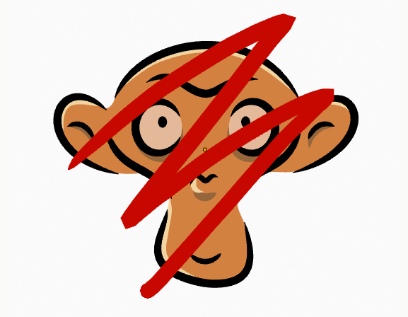
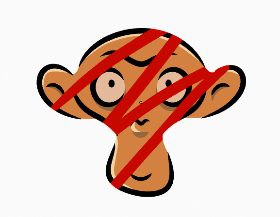

2D Layers¶
Grease Pencil Layers panel.
Layers List¶
Grease Pencil objects each have a list of 2D layers for grouping and arranging strokes in a List view. Any stroke can only belong to a single 2D layer.
There is always only one active layer in the list (the selected one). When you draw, the new strokes are added to the active layer.
By default the view order of the layers in the viewport is top to bottom.
Every layer correspond to a channel in the Dope Sheet editor (in Grease Pencil mode). See Dope Sheet for more information.
Layers can also be used together with Modifiers to only affects part of your drawing. See Modifiers for more information.
Tip
Sometimes the layers that your are not working on could be a distraction, you can activate Fade Layers in overlays to control the opacity of the non active layers. See Overlays for more information.
Next to the layer name there are four icons buttons that control common properties of the layer:
- Mask (mask icon)
When the mask is enabled, all the layers below the current one function as a single mask. This mask hide any pixel in the current layer outside the mask created by the underlying layers.
Red stroke on top layer without mask.
Red stroke on top layer with mask activated.
- Lock (padlock icon)
- Toggle layer from being editable.
- Viewport/Render Visibility (eye icon)
- Toggle layer visibility in the viewport and in render.
- Onion Skinning (onion skin icon)
- Toggle the use the layer for Onion Skinning.
Below the layers list there are additional common settings:
- Blend
- The layer blending operation to perform. See Color Blend Modes.
- Opacity
- Used to set the opacity of the layer.
- Show Only On Keyframed
- Makes the layer visible in the viewport only if it has a keyframe in the actual frame. This helps for example when you are in the inking process using the Fill tool and want to only see the strokes that are in the actual frame to avoid fill in unwanted regions.
Specials¶
- Duplicate Layer
- Makes an exact copy of the selected layer appending a number to differentiate its name.
- Show All
- Turns on the visibility of every layer in the list.
- Hide Others
- Turns off the visibility of every layer in the list except the active one.
- Lock All
- Locks edition of all the layers in the list.
- Unlock All
- Unlocks edition of all the layers in the list.
- Autolock inactive layer
- Locks automatically the edition of every layer in the list except the active one. This way you avoid to make unwanted changes in other layers without the need to lock them everytime.
- Merge Down
- Merge the selected layer with the layer below, the new layer keeps the name of the lower layer.
- Copy Layer to Object
- Makes a copy of the layer and move it to the selected Grease Pencil object.
Lock and Visibility General Controls¶
- Lock (padlock icon)
- Toggle whether the active layer is the only one that can be edited.
- Visibility (screen icon)
- Toggle whether the active layer is the only one that can be edited and is visible.
Adjustments¶
Layers adjustment panel.
- Tint Color/Factor
- Color that tint any material colors used in the layer. The Factor controls the amount of tint color to apply.
- Stroke Thickness
- Thickness value that override the strokes thickness in the layer.
- Pass Index
The layer index number can be used with some modifiers to restrict changes to only certain areas.
See Modifiers for more information.
- View Layer
- Defines the View Layer to use for the Grease Pencil layer. If empty, the layer will be included in all View Layers. This is useful to separate drawings parts for compositing.
- Disallow Locked Materials Editing
- Avoids editing locked materials in the layer. When disabled, any material can be edited even if they are locked in the material list.
Relations¶
- Parent/Type
- Select a Parent object and Type to manipulate the layer. The layer will inherit the transformations of the parent, this is especially useful when rigging for cut-out animation.
Layer Display¶
- Custom channel color
- Sets the color to use in the channel region of the Dope Sheet.